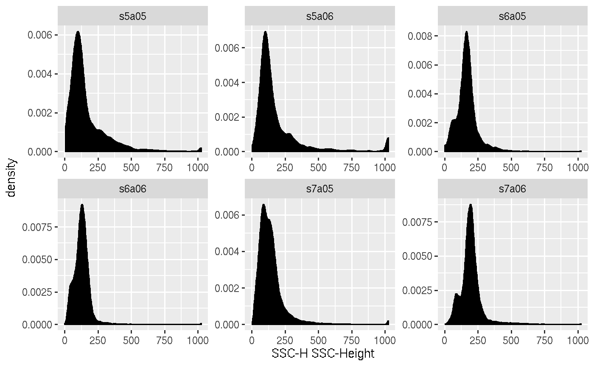
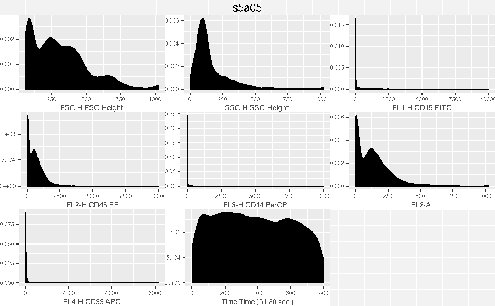
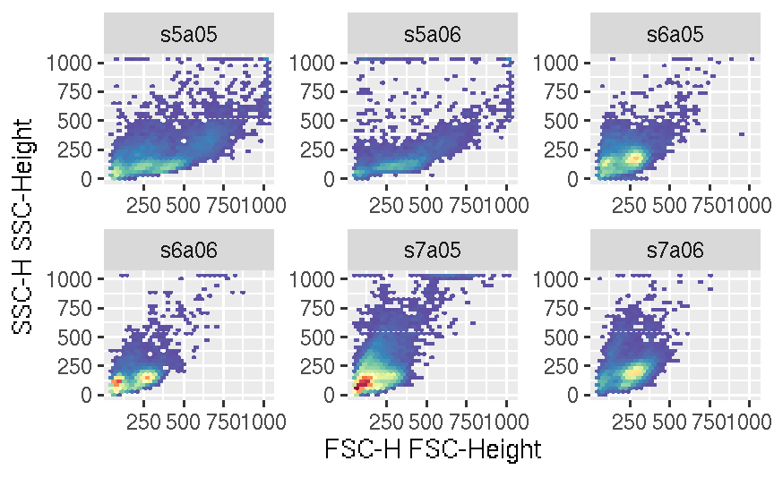
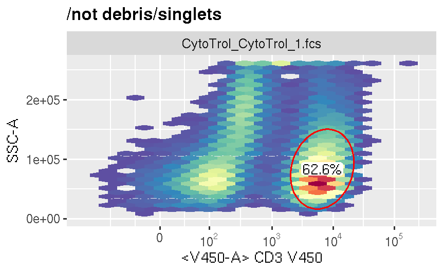
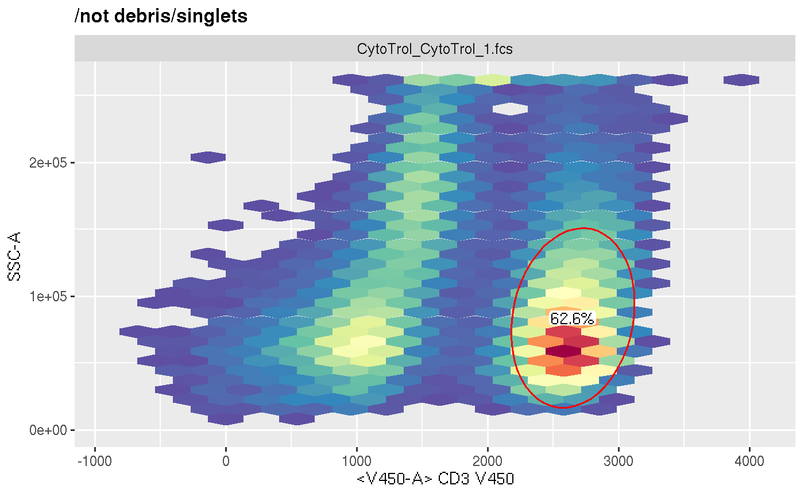
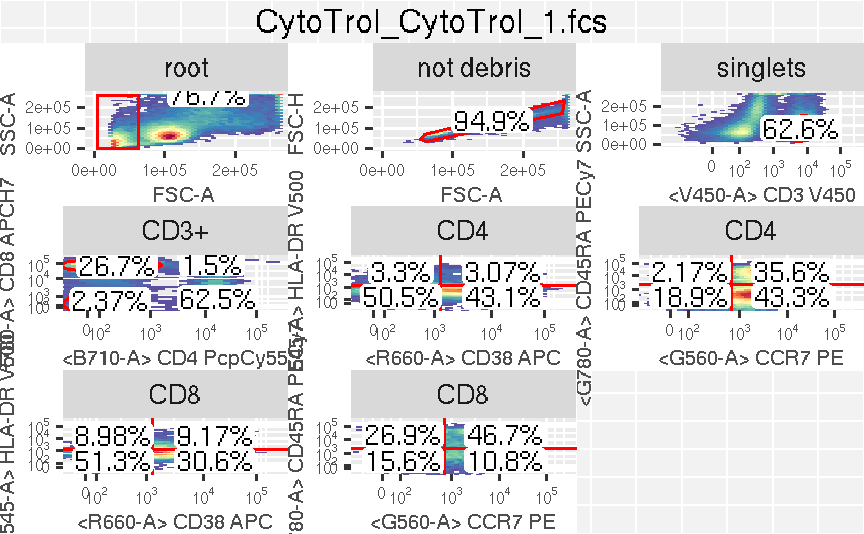

R/autoplot.R
autoplot.RdOverloaded autoplot methods for the cytometry data structure: flowFrame or flowSet, Gatinghierarchy, GatingSet. It plots the cytometry data with geom_histogram, geom_density or geom_hex. When autoplot a GatingSet/Gatinghierarchy, the second argument should be a gate or population node. And the dimensions(channels/markers) are deduced from the gate dimensions.
# S3 method for flowSet autoplot(object, x, y = NULL, bins = 30, ...) # S3 method for ncdfFlowList autoplot(object, ...) # S3 method for flowFrame autoplot(object, x, ...) # S3 method for GatingSetList autoplot(object, ...) # S3 method for GatingSet autoplot(object, gate, x = NULL, y = "SSC-A", bins = 30, axis_inverse_trans = TRUE, ...) # S3 method for GatingHierarchy autoplot(object, gate, y = "SSC-A", bool = FALSE, arrange.main = sampleNames(object), arrange = TRUE, merge = TRUE, projections = list(), strip.text = c("parent", "gate"), path = "auto", ...)
| object | The data source. A core cytometry data structure. A flowFrame, flowSet, GatingSet or GatingHierarchy object |
|---|---|
| x | define the x dimension of the plot (not used when object is a GatingSet). When object is a flowFrame, it can be missing, which plots 1d density plot on all the channels. |
| y | define the y dimension of the plot. Default is NULL, which means 1d densityplot. |
| bins | passed to geom_hex |
| ... | other arguments passed to ggplot |
| gate | the gate to be plotted |
| axis_inverse_trans | logical flag indicating whether to add axis_x_inverse_trans and axis_x_inverse_trans layers. |
| bool | whether to plot boolean gates |
| arrange.main | the main title of the arranged plots |
| arrange | whether to use arrangeGrob to put multiple plots in the same page |
| merge | wehther to merge multiple gates into the same panel when they share the same parent and projections |
| projections | a list of customized projections |
| strip.text | either "parent" (the parent population name) or "gate "(the gate name). The latter usually is used when merge is FALSE |
| path | the gating path format (passed to gs_get_pop_paths) |
a ggcyto object
library(flowCore) data(GvHD) fs <- GvHD[subset(pData(GvHD), Patient %in%5:7 & Visit %in% c(5:6))[["name"]]] #1d- density plot autoplot(fs, x = "SSC-H")#1d- density plot on all channels autoplot(fs[[1]])#2d plot: default geom_hex plot autoplot(fs, x = 'FSC-H', y ='SSC-H')#autplot for GatingSet dataDir <- system.file("extdata",package="flowWorkspaceData") gs <- load_gs(list.files(dataDir, pattern = "gs_manual",full = TRUE))#>#>#>autoplot(gs, "CD3+")#>#display axis values in transformed scale autoplot(gs, "CD3+", axis_inverse_trans = FALSE)#>#autplot for GatingHierarchy gh <- gs[[1]] autoplot(gh) # by default the strip.text shows the parent population#>#>#>#>#>#>#>#>#To display the gate name #autoplot(gh , strip.text = "gate")